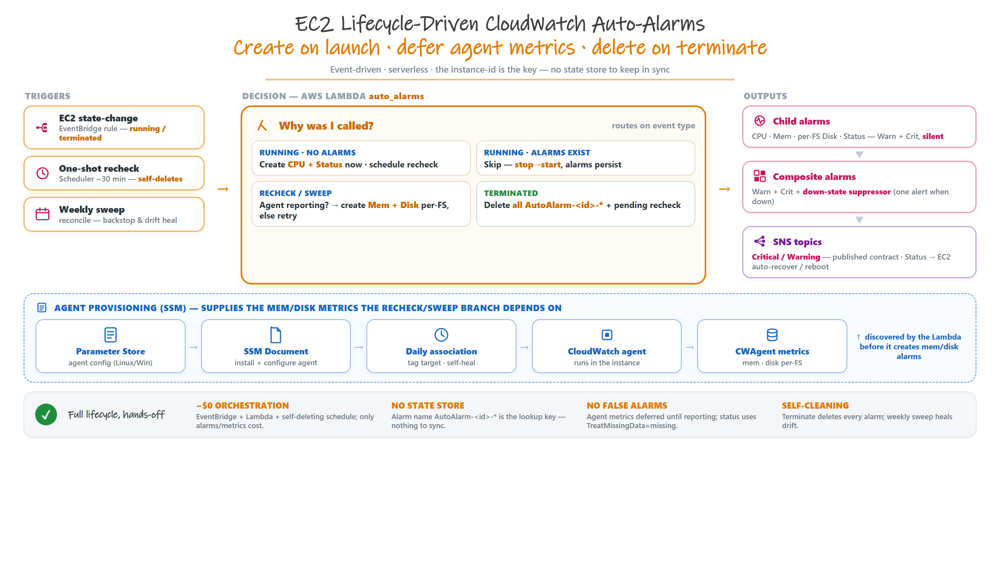
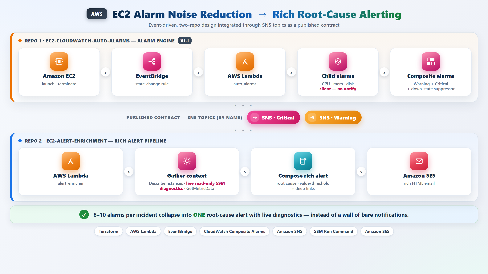

Designing, automating, and operating reliable cloud infrastructure on AWS with Infrastructure as Code and CI/CD.
I'm a Cloud Engineer with 4.5+ years of experience building and automating reliable cloud infrastructure on AWS. I focus on turning manual, error-prone operations into clean, automated, version-controlled workflows.
Tools and services I work with day to day.
Selected work in cloud automation and Infrastructure as Code.

Auto-creates CloudWatch alarms (CPU, memory, per-filesystem disk, status checks) the moment an EC2 instance launches and deletes them all on termination — no upkeep, no orphans. Rolls 8–10 per-metric alarms into one composite alarm per instance with down-state suppression to kill alert floods. Works cross-OS: Windows + all Linux distributions. Event-driven, serverless, 100% Terraform.

Event-driven companion that consumes the alarm project's SNS topics (a published contract) and turns each composite alarm into one rich, root-cause email via Amazon SES — with live, read-only SSM diagnostics pulled off the instance (top processes, disk usage, recent errors), value vs threshold, and deep links. Collapses 8–10 alarms into a single actionable alert, for both Linux and Windows.
Open to connecting on cloud engineering, AWS, and infrastructure automation. Feel free to reach out.